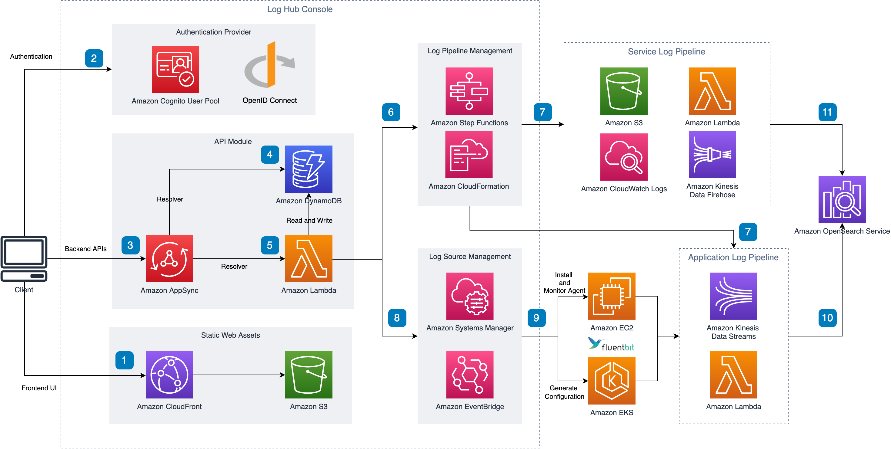

| SFDC Tag (SA) | |
| Campaign ID (Global) | SOLN-CloudFoundations-CLO |
| Campaign ID (GCR) | AWS Solution - Log Hub |
| Solution ID | SO8025 |
| 状态 | 正式发布 |
| 一键部署 | Y |
| 代码开源 | GitHub Repo |
| 技术支持 | Support SIM |
要快速访问此项目，请右键复制并收藏“#”处的链接。
由于运维排错、运营数据挖掘和安全合规等方面的需求，客户需要进行统一的日志分析，并且从中挖掘出有用的信息，帮助制定决策和行动计划。
该方案适用于各行业的客户，特别是那些使用多项服务或应用程序的客户，他们需要一个统一的平台来进行日志分析。
该方案适用于收集、处理和分析日志的场景，特别是当客户期望：操作简单易用，可以快速搭建日志分析流程，支持不同来源、类型的多种日志，将日志收集到一处进行处理与分析，通过可视化的仪表盘快速获取数据洞察。
在日志分析工作中，客户常常要面对多种挑战：
(1) 日志种类繁多，格式不一致；
(2) 日志存储位置分散，没有统一的管理平台；
(3) 日志分析涉及多种技术栈和工具，学习曲线较长；
(4) 缺乏数据工程师，无法从日志中获取有用的洞察；
(5) 不了解云上日志分析的最佳实践；
(6) 需要投入开发和运维人力。
该方案提供了简单易用的管理控制台，使用户能够针对不同类型的日志快速搭建分析流，主要具有如下特点。
(1) 简单易用：客户只需要通过前端页面向导，点击鼠标，就可以完成日志的收集、处理与分析的端到端流程。
(2) 开箱即用的仪表盘：针对常见日志类型提供标配的数据仪表盘，客户可以直接用于分析日志，快速挖掘其中的价值。
(3) 支持多种日志类型：包括亚马逊云科技的云服务日志，以及部署在服务器上或容器内的应用程序的日志，该方案可以一站式解决针对这些日志的收集、处理与分析。
(4) 减少运维压力：该方案自动配置和管理底层资源，使客户可以集中精力在日志分析上，而不需要关注日志收集的过程。
Asia Innovations、嘉实财富、火币等金融、互联网行业的客户部署了Log Hub的WAF日志分析功能，用于甄别纠正误杀请求，优化WAF规则配置，从而实现高效率的安全运营。
电商客户Flamingo使用Log Hub进行一站式的日志分析，部署了多条日志分析流，涵盖了CDN (CloudFront)、ALB，以及后端服务Nginx、Java应用等部分的日志，满足快速发现和排查问题的需要，显著提高了运维的效率，使1名运维人员即可管理20余条日志分析流。
可提供支持的合作伙伴
PDM: PSA:
PDM: PSA:
PDM: PSA:
PDM: PSA:
该方案提供一站式的日志管理与分析功能，帮助客户简化日志相关工作。它基于 Amazon OpenSearch 和其它托管服务构建，能有效地提高日志采集、日志处理、日志可视化等应用场景下的工作效率。同时，该方案内嵌网页控制台，可提供端到端的客户体验。该解决方案的功能主要包括：提供集中化日志摄入特性，采集多账号、多区域的日志，便于集中管理；内嵌无代码日志处理插件，实现快速数据清洗或数据增强；提供可视化模板，用于搭建仪表盘，获取数据洞察。它帮助客户自动化编排亚马逊云科技的多种服务，从而轻松应对多种日志分析场景。
2023年8月发布2.0版本，新增重点功能包括：S3连接器、日志管道洞察、轻量日志引擎 (预览版)，并新增多项功能和优化，例如OpenSearch集群导入检查、EC2机器组权限自动添加等。
该方案支持一键部署，提供友好的管理控制台，使用户能够快速搭建端到端的日志分析流。
客户需要拥有亚马逊云科技的中国区域账号或者全球区域账号，无其他部署前提条件。客户即使没有任何基础，也能快速搭建出演示或POC系统进行展示和验证。
对客户没有资源或能力方面的要求。该方案提供前端界面，所以客户不需要有任何编程基础，只需要点击鼠标就可以完成日志的收集与分析操作。
该方案的应用成本与客户需要分析的日志量有关。该方案采用无服务器架构，主要成本是Amazon OpenSearch服务的费用，需要根据客户的日志量进行评估。有关具体内容，请参考实施指南，或咨询客户经理。
该方案提供源代码和Amazon CloudFormation模板。客户可以参考实施指南，运行Amazon CloudFormation模板一键部署。客户可以自行修改源代码来满足特定的需求。如需要咨询技术问题，请在GitHub上提交issue，或通过客户经理联系该方案的项目负责人。
aaa

| 产品经理 | Robin Luo |
| 项目负责人 | Aiden Dai (daixb, 185-1650-3250) |
| 开发人员 | James Ma (taomat) Aiden Dai (daixb) Kervin Hu (huyikai) |
| 技术负责人 | Joe SHI (qiaoshi, 130-6186-6992) |
| GTM经理 | Pu Zhang (puzhang, 136-8317-0879) |
[跟进客户]
这个解决方案的内容有错误？需要更新？太技术范了，看不懂？ 快告诉我们吧！ » 内容改进建议